Liquid Glass
Barra, Dock, widgets y emergentes de vidrio con deslizador de intensidad. Con Hyprland desenfoca de verdad lo que hay detrás; con sway, el fondo.

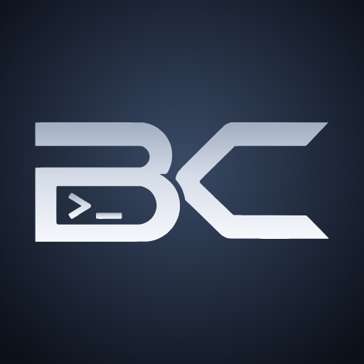
0.9.3-beta · prereleaseLigero. Potente. Fluido.
Sistema operativo Linux para ARM64 y x86_64, en español por defecto, con un escritorio propio inspirado en macOS. Creado por Borja Candel.
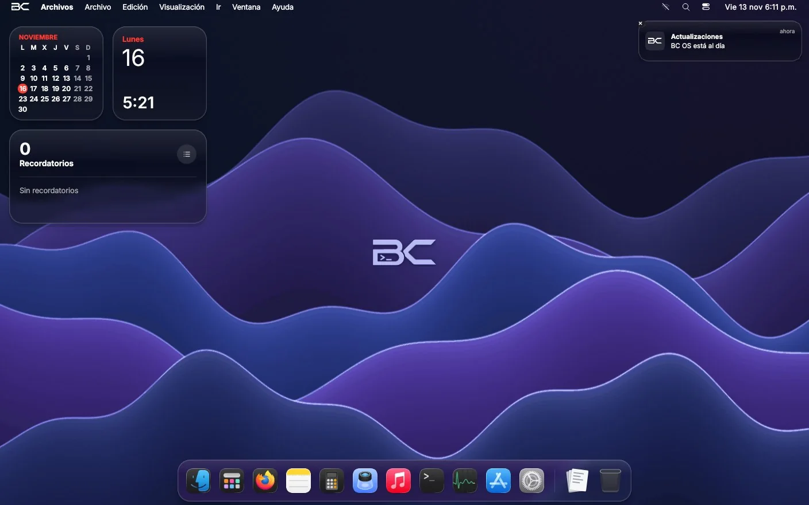
Ligero.
Potente.
Fluido.
Escritorio por defecto desde la 0.6
Una réplica del aspecto y del comportamiento de macOS hecha con código y recursos propios o libres, sin usar nada de Apple. Barra de menús, Dock, vidrio, Spotlight, Control Center y apps propias, todo en español.
Barra de menús transparente con menús globales, widgets de vidrio arrastrables y Dock con ampliación, rebote y apps recientes.
Wi-Fi, Bluetooth, red, Concentración, mosaico, pantalla, sonido y reproducción, con controles que se añaden y se quitan.

Todas las apps en una rejilla por páginas con búsqueda, sobre el fondo desenfocado (F4).

Un gestor tipo Finder con vistas de iconos, lista, columnas y galería, etiquetas y pestañas, y unos Ajustes del Sistema propios.
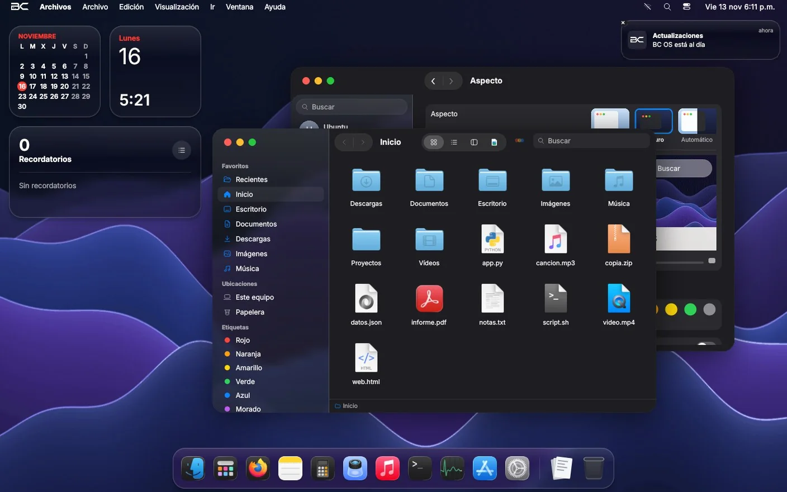
Apps, archivos, cálculos y acciones desde un solo buscador, con resultados por secciones (Ctrl+Espacio).

Claro u oscuro en caliente en el shell, las apps BC, GTK y sway, con vidrio legible en los dos.

Fecha, hora grande y contraseña sobre el fondo, protegido por swaylock si el panel fallara.
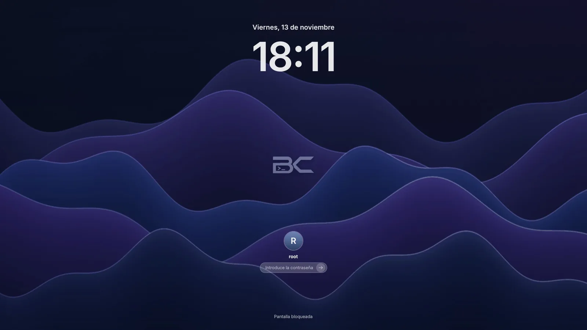
Instalador gráfico en la ISO live: disco con cifrado opcional, cuenta, región, resumen y progreso real.
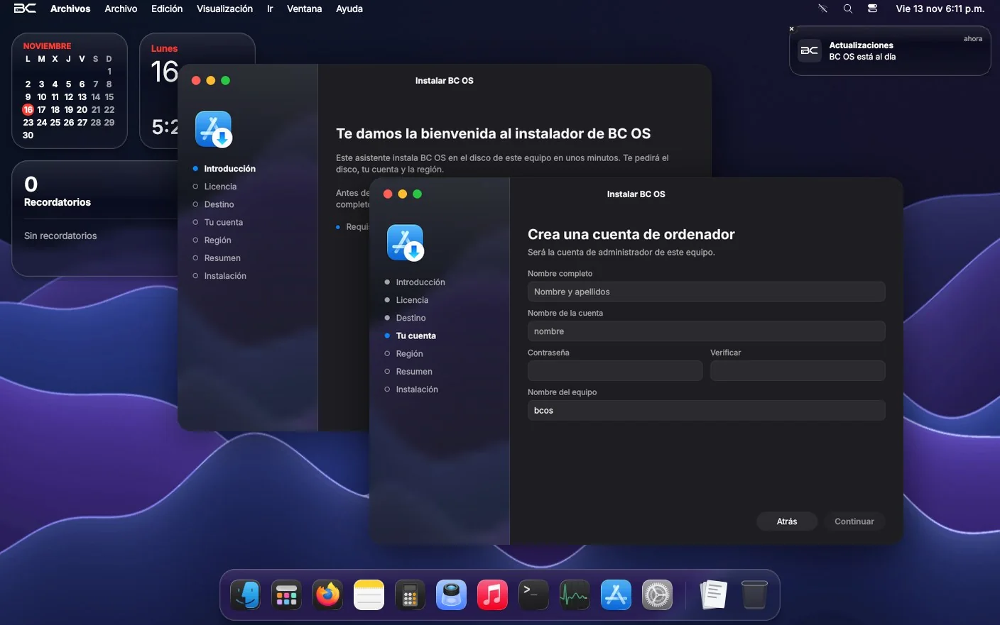
Funciones
Barra, Dock, widgets y emergentes de vidrio con deslizador de intensidad. Con Hyprland desenfoca de verdad lo que hay detrás; con sway, el fondo.
Ampliación, punto de app abierta, rebote, recientes, pila de Descargas y Papelera.
Escritorios con «+», arrastrar ventanas entre ellos y selector de apps con Alt+Tab.
Ventanas que se abren con muelle, se cierran encogiéndose y se minimizan al Dock como en macOS.
Historial de avisos y widgets de calendario y recordatorios.
«Instalar BC OS» en la ISO live: introducción, licencia, disco con cifrado opcional, cuenta, región, resumen y barra de progreso real. También desde Terminal con sudo bc-install.
Ghostty (o Alacritty si su compilación falla), 80×24, título «usuario — fish — 80×24» y «Último inicio de sesión».
Aviso, papelera, bloqueo, volumen, captura y error, generados para BC OS.
En todas las ventanas, también sin aceleración 3D.
Antes de cada actualización se guarda el sistema; bc-restaurar vuelve atrás.
Apps BC
Monitor de Actividad, Tienda, Calculadora, Notas, Vista previa, Calendario, Recordatorios y Música, con el mismo vidrio y las mismas animaciones que el escritorio.
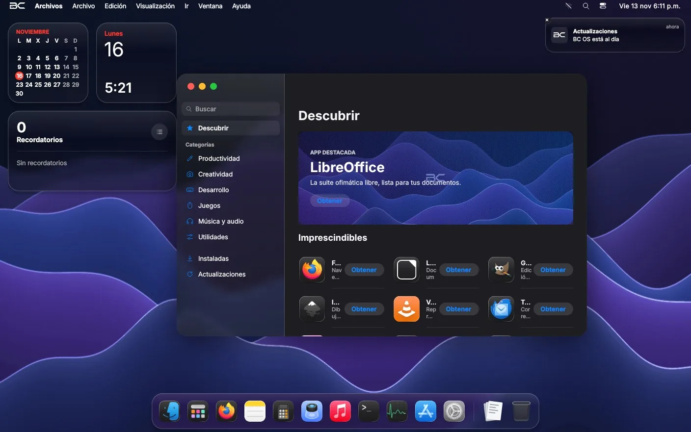
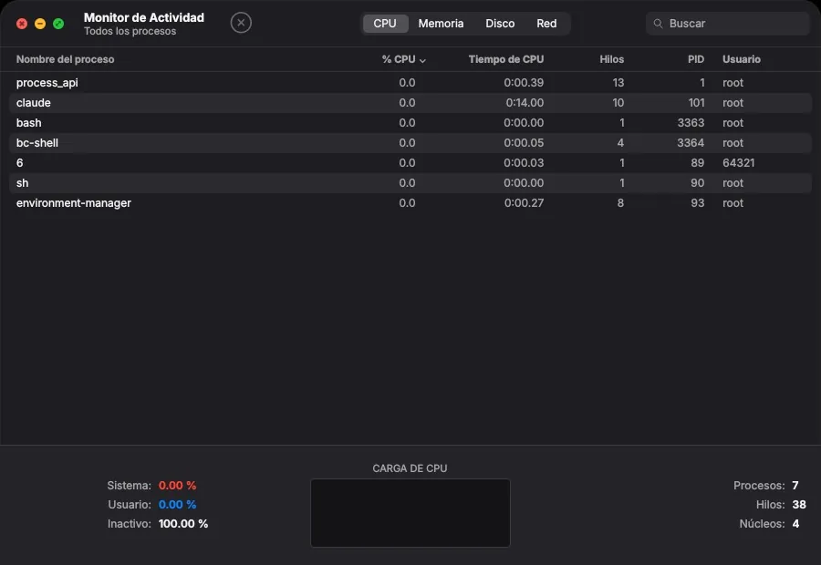
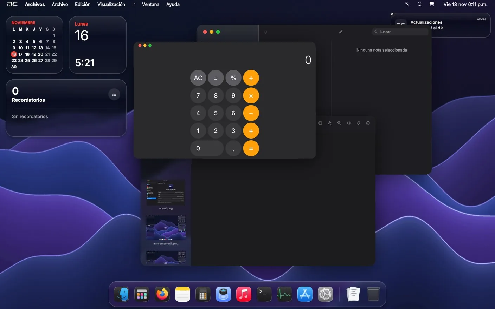
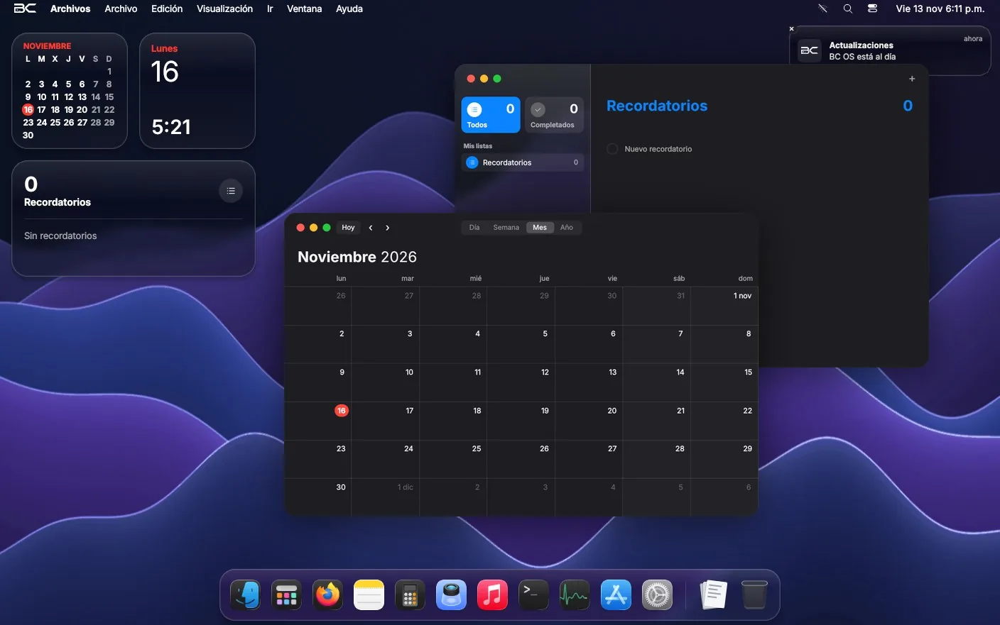
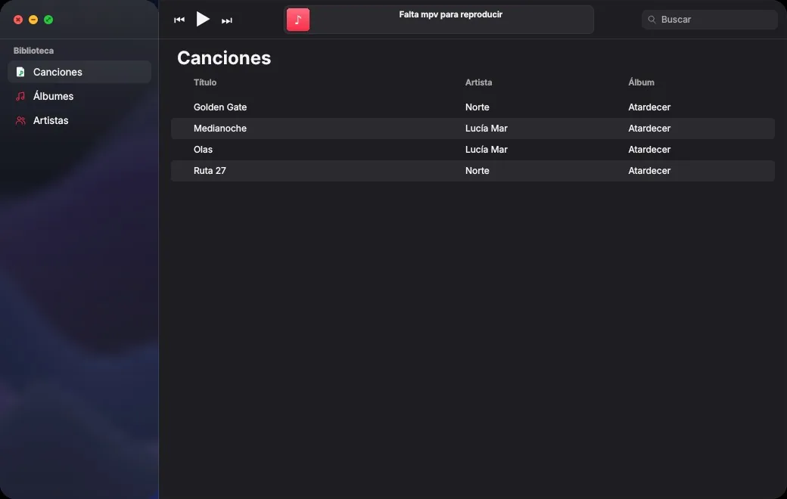
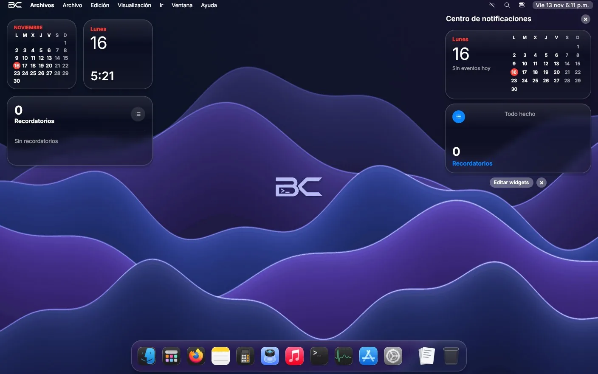
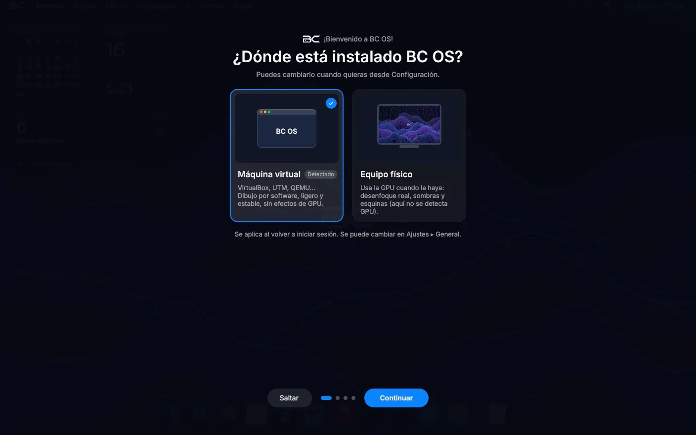
Fondos de pantalla
Colecciones «Ondas» y «Formas» en 4K, con el logo BC, generadas con scripts propios en Python.
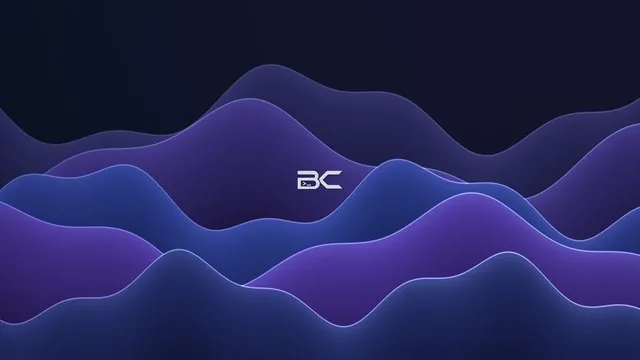
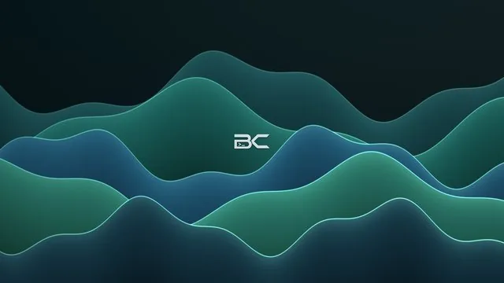
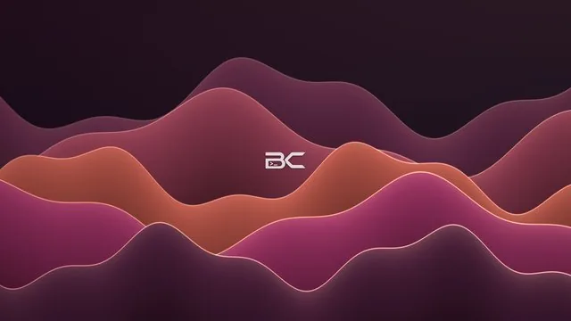
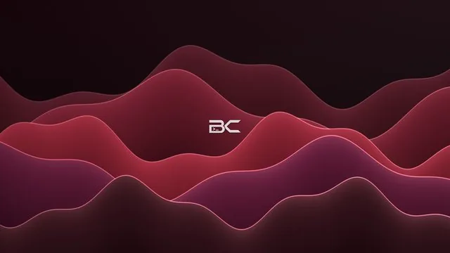
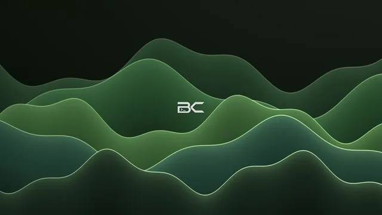
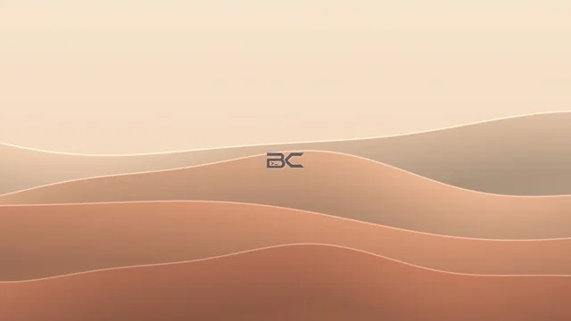
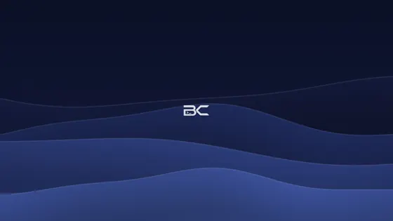
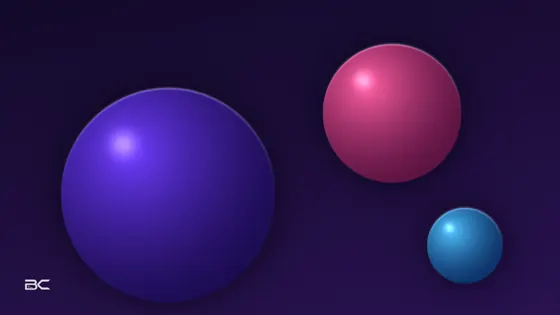
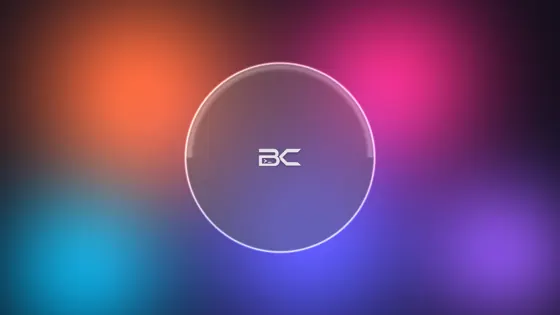
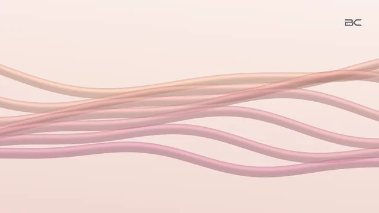
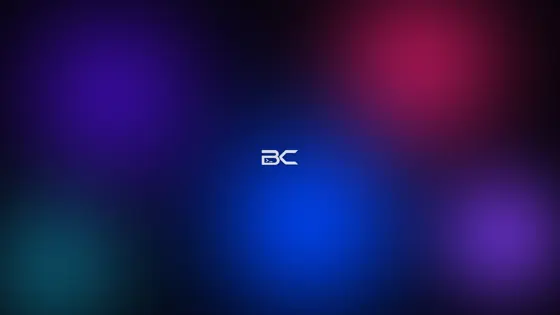
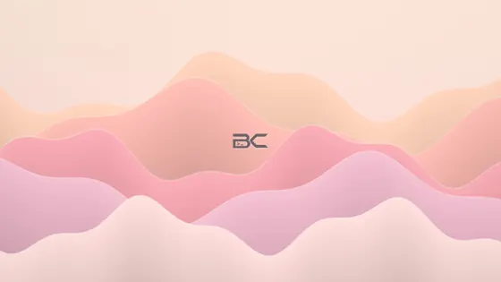
Con 3D o sin él
~/.config/bc/compositor.Arquitectura
Atajos
Versiones
Instalador gráfico tipo macOS, animaciones de avisos y ventanas, esquinas redondeadas también sin 3D, iconos tipo macOS en todo el sistema, botón verde, 20 fondos 4K y Terminal como macOS.
Hyprland por defecto con 3D: animaciones fluidas y desenfoque real; sway por software si no.
x86_64 e ISO live, primer arranque VM o equipo físico, repositorio [bc], instantáneas, Tienda sin contraseña, Ghostty y box64.
Monitor, Tienda, Calculadora, Notas, Vista previa, Calendario, Recordatorios y Música; vibrancy y widgets editables.
Escritorio Golden Gate por defecto; arranca en QEMU con login y escritorio correctos.
Login, bloqueo, Centro de control, Archivos, sway, menús globales, asistente de bienvenida y sesión Dotfiles (bspwm).
Primeras imágenes ARM64 que arrancan en VirtualBox.
Prueba completa en VirtualBox y hardware, firma GPG del repositorio y primera versión estable. Es un hito, no una promesa.
Descargar y probar
Cada versión trae, para ARM64 (Mac Apple Silicon, Raspberry Pi…) y x86_64 (PC), un disco para VirtualBox y una ISO live UEFI con el instalador.
.vdi.zip y comprueba el SHA-256..vdi. Gráficos: VMSVGA.sudo bc-install (opciones --bootloader grub y --secure-boot).Estado honesto: beta experimental. La serie 0.6 arrancó en QEMU aarch64 con login y escritorio correctos, pero muchas piezas están compiladas y vistas en capturas y aún pendientes de prueba en VirtualBox y en hardware real. Las capturas de esta página son del shell en el equipo de desarrollo. Las versiones de prueba traen una contraseña por defecto pública y SSH activo: úsalas solo en máquinas virtuales.